OGLE-2013-BLG-0911Lb: جسم ثانوي عند حد الكواكب-الأقزام البنية حول قزم من النوع M
الملخص
نقدّم تحليل حدث العدسة الميكروية ذي العدسة الثنائية OGLE-2013-BLG-0911. تشير حلول أفضل ملاءمة إلى نسبة كتلة ثنائية مقدارها ، وهي تختلف عما ورد في Shvartzvald et al. (2016). يعاني الحدث من انحلال التقارب/الاتساع المعروف، مما ينتج مجموعتين من الحلول للفصل الإسقاطي المطبّع بنصف قطر آينشتاين، وهما أو . تتيح لنا قياسات المصدر محدود الحجم وأرصاد اختلاف المنظر قياس المعلمات الفيزيائية للعدسة. يتكون نظام العدسة من قزم من النوع M يدور حوله رفيق مشتري ضخم عند فصل قريب جدا (، ، ) أو واسع (، ، ). وعلى الرغم من أن نسبة الكتلة أعلى قليلا من حد نسبة الكتلة بين الكواكب والأقزام البنية (BD) البالغ والمستخدم عادة، فإن وسيط الكتلة الفيزيائية للرفيق أدنى قليلا من حد الكتلة بين الكواكب وBD البالغ . ومن المرجح أن آليات تشكل BDs والكواكب مختلفة، وأن الأجسام القريبة من الحدود يمكن أن تكون قد تشكلت بأي من الآليتين. ومن المهم استقصاء توزع مثل هؤلاء الرفقاء ذوي الكتل من أجل تقييد نظريات التشكل إحصائيا لكل من BDs والكواكب الضخمة. وعلى وجه الخصوص، تستطيع طريقة العدسات الميكروية استقصاء التوزع حول الأقزام M منخفضة الكتلة، بل وحتى حول BDs، وهو أمر صعب بطرائق كشف الكواكب الخارجية الأخرى.
1 مقدمة
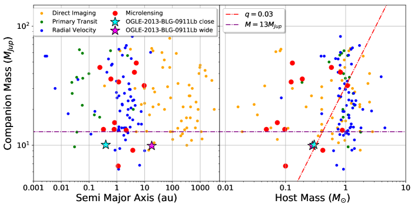
تمتلك الأقزام البنية (BDs) كتلا مقدارها ، وهي متوسطة بين كتل نجوم النسق الرئيسي والكواكب (Burrows et al., 1993). وعلى الرغم من أن وجود BDs اقتُرح أولا في Kumar (1962)، لم تكن هناك أدلة رصدية على BDs حتى 1995 (Nakajima et al., 1995) بسبب انخفاض لمعانها ودرجات حرارتها. وحتى الآن، اكتشفت عدة فرق مسحية أكثر من عشرة آلاف BD حقلية، كما لُخص في الجدول 1 من Carnero Rosell et al. (2019). تتنبأ معظم النظريات الحالية بأن BDs الحقلية تتشكل بطريقة مشابهة لنجوم النسق الرئيسي، عبر الانهيار الثقالي المباشر والتفتت المضطرب للسحب الجزيئية (Luhman, 2012). وتحظى هذه النظريات بدعم رصدي. فعلى سبيل المثال، وجد André et al. (2012) تكتلات كثيفة ذاتية الجاذبية من الغاز والغبار بكتلة 0.015-0.03، وهي مشابهة لكتل BDs منخفضة الكتلة. ومن ناحية أخرى، فإن آلية التراكم اللبي (Mordasini et al., 2009; Tanigawa & Tanaka, 2016) وآلية عدم الاستقرار الثقالي (Boss, 1997, 2001) قادرتان أيضا على إنتاج رفقاء بكتل BD في الأقراص الكوكبية الأولية. كشفت مسوح السرعة الشعاعية (RV) أن تواتر رفقاء BD ذوي أنصاف أقطار مدارية أقل من au حول نجوم النسق الرئيسي أدنى نسبيا من تواتر الرفقاء النجمية وذات الكتل الكوكبية (Marcy & Butler, 2000; Grether & Lineweaver, 2006; Johnson et al., 2010)، فيما يسمى “صحراء الأقزام البنية”. ومن المرجح أن هذا النقص في BDs يعود إلى اختلافات بين آليات تشكل الرفقاء ذات الكتل الكوكبية والكتل النجمية. ومع ذلك، لم يتضح بعد ما إذا كانت الرفقاء ذات كتل BD قد تشكلت مثل الكواكب في القرص الكوكبي الأولي، أو تشكلت كنجوم ثنائية في السحابة الجزيئية، أو أُسرت بواسطة النجوم الأولية. واقترحت بعض النظريات أن صحراء BD قد تكون نتيجة للتفاعل بين الرفقاء الضخمة والأقراص الكوكبية الأولية و/أو نتيجة للتطور المدي (Armitage & Bonnell, 2002; Matzner & Levin, 2005; Duchêne & Kraus, 2013).
استقصت مسوح العدسات الميكروية الجذبية (Mao & Paczynski, 1991) توزع الأنظمة الكوكبية الخارجية وراء خط الثلج (Hayashi, 1981)، حيث تكثر المواد الصلبة التي يهيمن عليها الجليد، مما يؤدي إلى تشكل فعال للكواكب الغازية العملاقة وفقا لنظرية التراكم اللبي (Lissauer, 1993; Pollack et al., 1996). ولأن العدسات الميكروية لا تعتمد على لمعان النجم المضيف، فإن التقنية حساسة للرفقاء حول الأجسام منخفضة الكتلة مثل الأقزام M المتأخرة أو حتى BDs. وفضلا عن ذلك، يمكن الاستدلال على المضيف وأي رفقاء عند مسافات تمتد حتى الانتفاخ المجري. وعلى النقيض من ذلك، فإن طريقتي RV والعبور (Borucki et al., 2010)، اللتين اكتشفتا معظم الكواكب الخارجية وBDs المعروفة حاليا والمدارة حول مضيفين، لا تمتلكان إلا حساسية للرفقاء القريبين نسبيا من مضيفيهم والذين تكون مضيفاتهم ساطعة بما يكفي. يبين الشكل 1 توزع رفقاء BDs/الكواكب الضخمة المكتشفة حول نجوم النسق الرئيسي وBDs. اكتشفت طريقتا RV (النقاط الزرقاء) والعبور (النقاط الخضراء) كثيرا من الرفقاء حول نجوم 1 ، لكنهما اكتشفتا عددا قليلا فقط حول النجوم منخفضة الكتلة دون 0.5 . ومن المحتمل أن يكون ذلك ناجما عن انحياز رصدي بسبب خفوت النجوم منخفضة الكتلة في نطاق الأطوال الموجية المرئية. رصدت طريقة التصوير المباشر (النقاط البرتقالية) رفقاء حول مضيفين بكتل مقدارها ، لكنها لم تكن قادرة على فصل الرفقاء ذات أنصاف الأقطار المدارية القصيرة نسبيا. أما العدسات الميكروية (النقاط الحمراء)، فقد اكتشفت رفقاء BDs/كواكب ضخمة حول مضيفين بكتل مقدارها وأنصاف أقطار مدارية مقدارها au (مثلا Ranc et al., 2015; Han et al., 2017; Ryu et al., 2018)، وهي بذلك مكمّلة لطرائق الكشف الأخرى. وقد قدر Gaudi (2002) أن أكثر من 25% من رفقاء BD ذوي الفواصل au يمكن اكتشافها بالمسوح الحالية للعدسات الميكروية. ووفقا لنظرية التراكم اللبي القياسية، فإن تشكل الكواكب الضخمة وكذلك BDs حول الأقزام M منخفضة الكتلة أصعب منه حول النجوم الشبيهة بالشمس، بسبب انخفاض كثافات سطح القرص (Ida & Lin, 2005) وطول المقاييس الزمنية (Laughlin et al., 2004). ومن الممكن تقييد آلية تشكل BD حول الأقزام M المتأخرة من خلال تحليل إحصائي لنتائج العدسات الميكروية في مجال كتل BD، يمكن مقارنته بنقص رفقاء BD القريبة حول النجوم الشبيهة بالشمس كما وجدته أرصاد RV.
أجرى Shvartzvald et al. (2016)، ويشار إليه فيما يلي بـ S16، تحليلا إحصائيا للمواسم الأربعة الأولى من مسح عدسات ميكروية من “الجيل الثاني” (Gaudi et al., 2009)، تألف من أرصاد تعاون Optical Gravitational Lensing Experiment (OGLE; Udalski et al., 1994)، وتعاون Microlensing Observations in Astrophysics (MOA; Bond et al., 2001; Sumi et al., 2003)، وفريق Wise (Shvartzvald & Maoz, 2012). حللوا 224 من أحداث العدسات الميكروية ووجدوا 29 أحداثا “شاذة” تدل على وجود رفيق لمضيف العدسة. ولغرض دراستهم الإحصائية، أجروا بحثا شبكيا خشنا مؤتمتا لنمذجة منحنيات الضوء بدلا من نمذجة مفصلة للأحداث الفردية. وفي النهاية، اشتقوا توزع تواتر الكواكب (الثنائيات) بدلالة نسبة كتلة الرفيق إلى المضيف ، ووجدوا نقصا محتملا عند . ومع ذلك، فمن المفيد إجراء تحليل مفصل لكل “مرشح كوكبي” في عينتهم ممن لا توجد له أي نماذج في الأدبيات. فعلى سبيل المثال، ذكروا أن OGLE-2013-BLG-0911 يمتلك نسبة كتلة كوكبية مقدارها ، لكننا وجدنا حلولا مفضلة جديدة بنسبة كتلة أقل تطرفا، .
نقدّم هنا تحليل حدث عدسة ميكروية عالي التكبير (أقصى تكبير مقداره )، هو OGLE-2013-BLG-0911. وقد رُصد “الشذوذ” الناجم عن رفيق لنجم العدسة بوضوح قرب قمة منحنى الضوء. نعرض أرصاد الحدث ومجموعات بياناته في القسم 2. ويرد تحليل منحنى الضوء في القسم 3. وفي القسم 4، نعرض تحليلنا لخصائص المصدر. وتوصَف المعلمات الفيزيائية لنظام العدسة في القسم 5. ونلخص النتيجة ونناقشها في القسم 6.
2 الرصد & مجموعات البيانات
| Site | Telescope | Collaboration | Label | Filter | $a$$a$footnotemark: | |
|---|---|---|---|---|---|---|
| Mount John Observatory | MOA-II 1.8m | MOA | MOA | 8761 | 1.055 | |
| Las Campanas Observatory | Warsaw 1.3m | OGLE | OGLE | 6895 | 1.480 | |
| Las Campanas Observatory | Warsaw 1.3m | OGLE | OGLE | 78 | 1.344 | |
| Florence and George Wise Observatory | Wise 1m | Wise | Wise1m | 253 | 0.947 | |
| Cerro Tololo-Inter American Observatory (CTIO) | SMARTS 1.3m | FUN | CT13 | 189 | 1.230 | |
| Cerro Tololo-Inter American Observatory (CTIO) | SMARTS 1.3m | FUN | CT13 | 35 | 1.182 | |
| Farm Cove Observatory | Farm Cove 0.36m | FUN | FCO | Unfiltered | 55 | 2.146 |
| Weizmann Institute of Science, Marty S. Kraar Observatory | Weizmann 16inch | FUN | WIS | 17 | 1.140 | |
| Haleakala Observatory | Faulkes North 2.0m | RoboNet | FTN | 27 | 2.181 | |
| Siding Spring Observatory (SSO) | LCO 1.0m, Dome A | RoboNet | cojA | 31 | 1.920 | |
| Cerro Tololo Inter-American Observatory (CTIO) | LCO 1.0m, Dome B | RoboNet | lscB | 51 | 1.311 | |
| Cerro Tololo Inter-American Observatory (CTIO) | LCO 1.0m, Dome C | RoboNet | lscC | 71 | 2.315 | |
| South African Astronomical Observatory (SAAO) | LCO 1.0m, Dome A | RoboNet | cptA | 32 | 0.559 | |
| South African Astronomical Observatory (SAAO) | LCO 1.0m, Dome B | RoboNet | cptB | 8 | 0.497 | |
| ESO’s La Silla Observatory | Danish 1.54m | MiNDSTEp | Dan | 76 | 2.087 | |
| Salerno University Observatory | Salerno 0.36m | MiNDSTEp | Sal | 20 | 1.607 |
Note. — جُمعت بيانات WIS وSal وlscC في صناديق زمنية مقدارها 0.01 يوم.
2.1 الرصد
اكتُشف حدث العدسة الميكروية OGLE-2013-BLG-0911 وأُصدر تنبيه عنه كمرشح عدسة ميكروية في 2013 يونيو 3 UT 21:51 بواسطة المرحلة الرابعة من تعاون OGLE (OGLE-IV; Udalski et al., 2015). يجري OGLE-IV11 1 http://ogle.astrouw.edu.pl/ogle4/ews/ews.html بحثا عن كواكب خارجية بالعدسات الميكروية باتجاه الانتفاخ المجري باستخدام تلسكوب Warsaw ذي القطر 1.3m في مرصد Las Campanas في تشيلي، وبمجال رؤية كلي واسع (FOV) قدره 1.4 deg2. أُجريت أرصاد OGLE باستخدام مرشحات النطاقين القياسي وشبه القياسي . كما تنفذ المرحلة الثانية من تعاون MOA22 2 https://www.massey.ac.nz/ iabond/moa/alerts/ (MOA-II; Bond et al., 2017) مسحا للعدسات الميكروية باتجاه الانتفاخ المجري باستخدام تلسكوب MOA-II ذي القطر 1.8m، المزود بكاميرا CCD ذات مجال رؤية 2.2deg2 (MOA-cam3; Sako et al., 2008) في مرصد Mount John (MJO) في نيوزيلندا. وبفضل مجال الرؤية الواسع، يرصد تعاون MOA نجوم الانتفاخ بمعدل زمني قدره 15-90min كل يوم بحسب الحقل. واكتشف مسح MOA الحدث بصورة مستقلة وأصدر تنبيها عنه باسم MOA-2013-BLG-551. أُجريت أرصاد MOA باستخدام مرشح عريض النطاق مخصص، هو “MOA-Red”، ويقابل تقريبا جمع المرشحين القياسيين و. كما أجرى فريق Wise33 3 http://wise-obs.tau.ac.il/ wingspan/ مسحا للعدسات الميكروية من 2010 إلى 2015، ورصد حقلا مقداره 8 ضمن بصمتي الرصد لكل من OGLE وMOA (Shvartzvald & Maoz, 2012). وقد رصدوا باستخدام تلسكوب Wise ذي القطر 1m في مرصد Wise في إسرائيل مع كاميرا LAIWO ذات مجال رؤية 1 (Gorbikov et al., 2010)، وكان معدل الرصد لكل من حقول Wise الثمانية min.
كان الحدث واقعا عند =(17:55:31.98، 29:15:13.8) أو عند الإحداثيات المجرية = (0.84∘، 2.02∘). وتنبأ التحليل الآني بأن الحدث سيبلغ تكبيرا قميا عاليا تكون خلاله الحساسية للرفقاء منخفضة الكتلة مرتفعة (Griest & Safizadeh, 1998; Rattenbury et al., 2002). وشُجعت أرصاد المتابعة خلال فترة التكبير العالي لالتقاط الإشارات الكوكبية القصيرة. ونتيجة لذلك، إضافة إلى أرصاد المسح من OGLE وMOA، رُصد منحنى الضوء بكثافة بواسطة عدة مجموعات متابعة: Microlensing Follow Up Network (FUN; Gould et al., 2006)، وMicrolensing Network for the Detection of Small Terrestrial Exoplanets (MiNDSTEp; Dominik et al., 2010)، وRoboNet (Tsapras et al., 2009; Dominik et al., 2019). وسنشير إلى هذا الحدث فيما يلي باسم OGLE-2013-BLG-0911.
2.2 اختزال البيانات
تُلخص جميع مجموعات بيانات OGLE-2013-BLG-0911 في الجدول 1. تستخدم معظم خطوط معالجة القياس الضوئي تقنية تحليل الصورة الفرقية (DIA; Alard & Lupton, 1998; Alard, 2000)، وهي فعالة جدا في الحقول عالية الكثافة النجمية مثل تلك الواقعة باتجاه الانتفاخ المجري. اختُزلت بيانات MOA وFUN CTIO باستخدام تنفيذ MOA لطريقة DIA (Bond et al., 2001, 2017). واختُزلت بيانات OGLE بواسطة خط معالجة DIA الخاص بـ OGLE (Wozniak, 2000). واختُزلت بيانات Wise باستخدام برنامج pySIS DIA (Albrow et al., 2009). أما بيانات FUN الأخرى وبيانات MiNDSTEp فقد اختُزلت باستخدام DoPhot (Schechter et al., 1993) وDanDIA (Bramich, 2008; Bramich et al., 2013). واختُزلت بيانات RoboNet باستخدام نسخة مخصصة من خط معالجة DanDIA (Bramich, 2008).
من المعروف أن أشرطة الخطأ الضوئي الاسمية التي يعطيها كل خط معالجة ضوئي قد تكون أقل من قيمها الحقيقية في الحقول عالية الكثافة النجمية باتجاه الانتفاخ. لذلك أعدنا تطبيع أشرطة الخطأ لكل مجموعة بيانات تجريبيا باتباع إجراء Bennett et al. (2008) وYee et al. (2012)، أي
| (1) |
حيث تمثل و الأخطاء المعاد تطبيعها والأخطاء الأصلية المعطاة من خطوط المعالجة، على الترتيب. والمعاملان و هما معاملا إعادة تطبيع الخطأ. هنا تمثل الأخطاء المنهجية عندما يكون فيض المصدر مكبرا بدرجة كبيرة. أضفنا 0.3% تربيعيا إلى كل خطأ، أي ، ثم حسبنا قيم من أجل بلوغ قيمة لكل مجموعة بيانات (Bennett et al., 2014; Skowron et al., 2016). نورد معاملات إعادة التطبيع في الجدول 1، إلى جانب عدد نقاط البيانات المستخدمة . وتحققنا من أن نموذج أفضل ملاءمة النهائي متسق مع نموذج أفضل ملاءمة الأولي الذي وُجد باستخدام مجموعات البيانات قبل إعادة تطبيع الأخطاء.
3 نمذجة منحنى الضوء
| Model | $a$$a$footnotemark: | BIC$b$$b$footnotemark: | BIC | ||||
|---|---|---|---|---|---|---|---|
| 1L1S | Static | 4 | 21027.4 | 21066.3 | 4485.1 | 4368.5 | |
| 1L2S | Static | 10 | 18631.0 | 18728.2 | 2088.7 | 2030.4 | |
| 1L2S | Xallarap | 12 | 17554.3 | 17670.9 | 1212.0 | 973.1 | |
| 2L1S | Static | 7 | 17473.7 | 17541.7 | 931.4 | 843.9 | |
| 2L1S | Parallax | 9 | 17262.7 | 17350.2 | 720.4 | 652.4 | |
| 2L1S | Xallarap | 14 | 16587.6 | 16723.6 | 45.3 | 25.8 | |
| 2L1S | Parallax+Xallarap | 16 | 16558.9 | 16714.4 | 16.6 | 16.6 | |
| 2L2S | Parallax+Xallarap | 16 | 16542.3 | 16697.8 | - | - | |
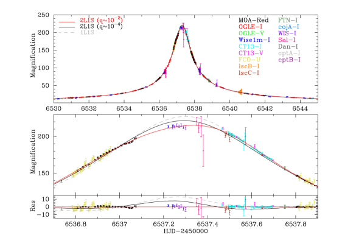
نقدّم هنا نمذجة منحنى الضوء لـ OGLE-2013-BLG-0911. يمثل الشكل 2 منحنى الضوء لـ OGLE-2013-BLG-0911. يمكن رؤية السمة الشاذة الرئيسية بين . يلائم نموذج قياسي أحادي العدسة أحادي المصدر (1L1S) البيانات بدرجة أسوأ من نموذج ثنائي العدسة أحادي المصدر (2L1S) بمقدار . في الأقسام الآتية، نعرض تفاصيل نمذجة منحنى الضوء لـ OGLE-2013-BLG-0911. وفي الجدول 2، نلخص المقارنات بين ، وعدد معلمات الملاءمة، ومعيار المعلومات البايزي (BIC) لنماذج العدسات الميكروية التي فحصناها.
3.1 وصف النموذج
بافتراض وجود نجم مصدر واحد، يمكن نمذجة الفيض المرصود في أي زمن معطى في حدث عدسة ميكروية، ، بالمعادلة الآتية،
| (2) |
حيث إن هو تكبير فيض المصدر، و هو فيض المصدر غير المكبر، و هو فيض المزج. نلاحظ أنه يمكن أثناء عملية الملاءمة حل و تحليليا بواسطة المعادلة الخطية (2) عند قيمة معطاة لـ . بالنسبة إلى نموذج قياسي أحادي العدسة أحادي المصدر (1L1S)، توجد أربع معلمات تصف سمات منحنى الضوء (Paczynski, 1986): زمن أقرب اقتراب للمصدر من مركز كتلة العدسة، ؛ ومعلمة الاصطدام، ، بوحدة نصف قطر آينشتاين الزاوي، ؛ وزمن عبور نصف قطر آينشتاين، ؛ ونصف قطر المصدر الزاوي، ، بوحدة . قياس مهم لأنه يؤدي إلى تحديد ، وهو مطلوب لتحديد علاقة الكتلة-المسافة لنظام العدسة.
في عملية الملاءمة لدينا، استخدمنا طريقة مونت كارلو بسلاسل ماركوف (MCMC) (Verde et al., 2003) مقترنة بتنفيذنا لطريقة إطلاق الأشعة العكسي (Bennett & Rhie, 1996; Bennett, 2010) من أجل إيجاد نموذج أفضل ملاءمة وتقدير لايقين المعلمات من التوزيع المستقر لـ MCMC لكل معلمة. استُخدمت نماذج الإظلام الطرفي الخطية لوصف النجم/النجوم المصدرية في هذا العمل. ومن قياس اللون الذاتي للمصدر الموصوف في القسم 4، افترضنا درجة الحرارة الفعالة K (González & Bonifacio, 2009)، والجاذبية السطحية ، والمعدنية log. ووفقا لنموذج ATLAS لدى Claret & Bloemen (2011)، اخترنا معاملات الإظلام الطرفي و و. هنا قُدّر لنطاق MOA- كمتوسط و، واستُخدم معامل النطاق ، ، للنطاق غير المرشح.
3.2 نموذج العدسة الثنائية (2L1S)
بالنسبة إلى نموذج قياسي ثنائي العدسة أحادي المصدر (2L1S)، توجد ثلاث معلمات إضافية: نسبة كتلة العدسة بين المضيف والرفيق، ؛ والفصل الثنائي الإسقاطي بوحدة نصف قطر آينشتاين، ؛ والزاوية بين مسار المصدر ومحور العدسة الثنائية، . هنا نعرّف معلمتي ملاءمة هما و، وذلك للنماذج الواسعة (). إذا كانت ، فإن مركز النظام في شيفرتنا العددية يزاح عن مركز كتلة الثنائية بمقدار
حيث تمثل محوري الإحداثيات الموازي والعمودي لمحور العدسة الثنائية على مستوى العدسة (Skowron et al., 2011)، ثم نعرّف زمن أقرب اقتراب للمصدر من “مركز النظام” ومعلمة الاصطدام بوحدات نصف قطر آينشتاين الزاوي بالرمزين و، على الترتيب.
3.2.1 النماذج الساكنة
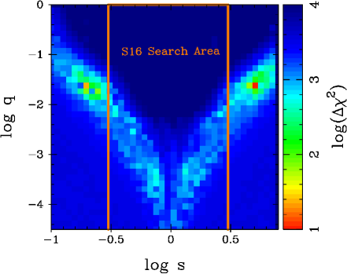
في البداية، استكشفنا تفسير 2L1S لشرح السمات الشاذة في منحنى الضوء. في نمذجة منحنيات الضوء للعدسات الميكروية 2L1S، من الشائع مواجهة حالات تفسر فيها نماذج فيزيائية مختلفة البيانات المرصودة بالقدر نفسه من الجودة، مثل انحلال التقارب/الاتساع (Griest & Safizadeh, 1998; Dominik, 1999) وانحلال الكوكب/الثنائية (Choi et al., 2012; Miyazaki et al., 2018)، حيث يمكن لتراكيب مختلفة من معلمات العدسة الميكروية أن تولد منحنيات ضوء متشابهة شكليا. لذلك ينبغي أن نستكشف فضاء المعلمات متعدد الأبعاد بدقة لإيجاد حل النموذج المفضل عالميا. أجرينا بحثا شبكيا مفصلا في فضاء المعلمات ، حيث يعتمد نمط التكبير بشدة على هذه المعلمات الثلاث. كانت مجالات البحث لـ و و هي و و، مع 40 نقطة شبكية، على الترتيب، ومن ثم يكون العدد الكلي للنقاط الشبكية . أجرينا تحليل البحث الشبكي باتباع الإجراء نفسه الموصوف في Miyazaki et al. (2018). يبين الشكل 3 خريطة الحد الأدنى في كل شبكة - من البحث الشبكي. وفي الشكل 3، وجدنا حدين أدنيين محليين محتملين حول و، وينتج ذلك عن انحلال التقارب/الاتساع. وبعد تنقيح جميع الحلول الممكنة، وجدنا نموذجي 2L1S الأفضل ملاءمة، القريب () والواسع ()، بقيمة ، حيث لا يتجاوز فرق بينهما . وكما يظهر في الشكل 2، فإن نموذج 2L1S مع يوفّر ملاءمات جيدة للسمات الشاذة قرب قمة منحنى الضوء. كما نعرض منحنى الضوء النموذجي لـ 2L1S مع في الشكل 2، وهو لا يلائم شذوذ منحنى الضوء جيدا.
أدرج S16 هذا الحدث في تحليلهم الإحصائي كحدث عدسة ميكروية كوكبي، مستخدمين نسبة كتلة مقدارها لهذا الحدث. غير أن إعادة تحليلنا وجدت أن نماذج 2L1S الساكنة ذات مفضلة على النموذج ذي بمقدار . وسبب هذا السهو هو أن النماذج ذات تقع خارج مدى بحثهم الشبكي في و. كما لم يُجر البحث عن نموذج أفضل ملاءمة خارج هذا المجال بتنقيح معلمات النماذج التي وجدها بحثهم الشبكي. وثمة اختلاف آخر عن S16، وهو أننا استخدمنا منحنيات ضوء MOA وOGLE معاد اختزالها، وأدرجنا جميع مجموعات بيانات المتابعة. ومع ذلك، تحققنا من أن نماذج 2L1S ذات غير مفضلة مقارنة بالنماذج ذات بمقدار ، حتى عندما استخدمنا بيانات المسح MOA وOGLE وWise1m. لذلك نلاحظ أن بيانات المسح كانت كافية لتحديد الحلول الجديدة.
3.2.2 تأثيرات اختلاف المنظر
على الرغم من أن أفضل النماذج الساكنة ملاءمة توفر ملاءمات جيدة للسمات الشاذة الرئيسية حول قمة منحنى الضوء، وجدنا أن منحنى الضوء عموما ينحرف قليلا عن النماذج الساكنة. يمتد الحدث OGLE-2013-BLG-0911 لمدة يوم، واستمر خلال معظم موسم الانتفاخ، مما يدل على أن منحنى الضوء قد يتأثر بتأثيرات عدسات ميكروية إضافية عالية الرتبة.
من المعروف أن التسارع المداري للأرض يسبب تأثير اختلاف المنظر (Gould, 1992, 2004; Smith et al., 2003). ويمكن وصف ذلك بمتجه اختلاف المنظر للعدسة الميكروية . هنا تشير و إلى المركبتين الشمالية والشرقية لـ مسقطتين على مستوى السماء في الإحداثيات الاستوائية. ويُعرّف اتجاه بحيث يكون مطابقا لاتجاه ، وهو الحركة الذاتية النسبية الجيومركزية بين العدسة والمصدر مسقطة على مستوى السماء عند زمن مرجعي ، وسعة هي حيث إن هو نصف قطر آينشتاين المسقط عكسيا على مستوى الراصد. اتخذنا زمنا مرجعيا مقداره يوم لهذا الحدث. ويتيح قياس وضع قيود على العلاقة بين كتلة العدسة ومسافتها (Gould, 2000; Bennett, 2008). وبالنسبة إلى أحداث مصادر الانتفاخ المجري، يمكن أن تعطي النماذج ذات و منحنيات ضوء متشابهة جدا (Skowron et al., 2011). وينعكس ذلك في زوج من مسارات المصدر المتماثلة بالنسبة إلى الثنائية، ويشار إليه أحيانا باسم “انحلال دائرة البروج”.
عند أخذ تأثير اختلاف المنظر في الاعتبار في النمذجة، وجدنا أن معلمتي اختلاف المنظر أعطتا تحسنا مقداره مقارنة بأفضل نموذج ساكن ملاءمة. ومع ذلك، وجدنا أيضا أن أفضل نموذج اختلاف منظر ملاءمة لا يبدو أنه يفسر الانحرافات طويلة الأمد لمنحنى الضوء عن أفضل نموذج ساكن ملاءمة، كما يظهر في الشكل 4. وهذا يدل على احتمال وجود تأثيرات عدسات ميكروية أخرى عالية الرتبة في منحنى الضوء. نلاحظ أن إضافة الحركة المدارية للعدسة لا تحسن نماذجنا.
3.2.3 تأثيرات xallarap
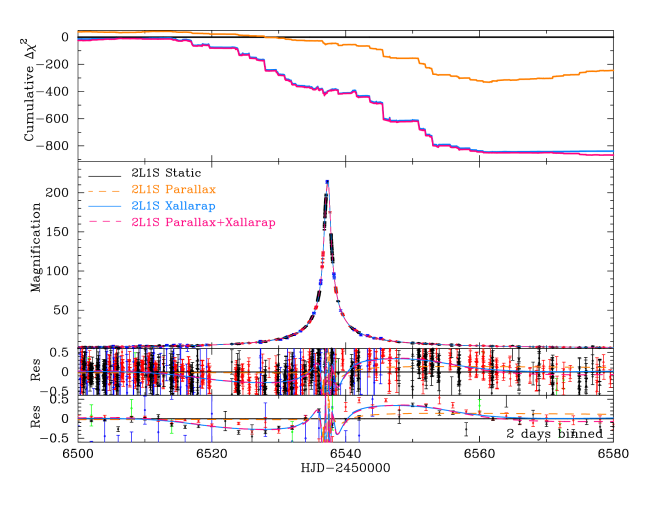
xallarap (Griest & Hu, 1992; Han & Gould, 1997; Poindexter et al., 2005) هو تأثير عدسات ميكروية في منحنى الضوء تسببه الحركة المدارية للمصدر حول رفيق المصدر. ويتطلب نموذج xallarap 7 معلمات ملاءمة إضافية تحدد العناصر المدارية لنظام المصدر: الاتجاه نحو النظام الشمسي بالنسبة إلى المستوى المداري لنظام المصدر، و؛ وفترة مدار المصدر، ؛ ولا مركزية مدار المصدر وزمن الحضيض، و؛ ومتجه xallarap، . ويشابه اتجاه اتجاه الحركة الذاتية النسبية الجيومركزية بين العدسة والمصدر ، وسعة هي حيث إن هو نصف المحور الأكبر لمدار المصدر و هو نصف قطر آينشتاين المسقط على مستوى المصدر، أي . تعطي قانونا كبلر الثالث ونيوتن الثالث العلاقات الآتية (Batista et al., 2009)،
| (3) | |||
| (4) |
حيث إن و هما كتلتا المصدر ورفيق المصدر، على الترتيب. لذلك يمكننا تقدير كتلة رفيق المصدر من قياسات xallarap بافتراض و.
نظرا إلى كبر عدد المعلمات الإضافية لتأثير xallarap، أجرينا بحثا شبكيا بتثبيت لتجنب فقدان أي حدود دنيا محلية. وبعد تنقيح جميع الحلول الممكنة، وجدنا أن نموذج xallarap الأفضل ملاءمة مفضل على نموذج اختلاف المنظر الأفضل ملاءمة بمقدار . وكما في الشكل 4، فإن تضمين تأثير xallarap ينتج نموذجا يلائم البواقي طويلة الأمد من أفضل نموذج ساكن ملاءمة، ويحسن قيم بدرجة كبيرة. وفترة المدار الأفضل ملاءمة لنظام المصدر هي يوم، وهي تختلف بوضوح عن الفترة المدارية للأرض البالغة 365 يوم، مما يدل على أن إشارات اختلاف المنظر وxallarap مميزة بوضوح. وباتباع المعادلة (3)، يشير نموذج xallarap الأفضل ملاءمة 2L1S إلى كتلة رفيق مصدر مقدارها ومسافة بين المصدرين مقدارها au، بافتراض و kpc، وهو نظام نجمي ثنائي شائع في الجوار الشمسي (Duchêne & Kraus, 2013). قيم الأفضل ملاءمة أصغر بكثير من 1، مما يعني أن المصدرين منفصلان بمقدار أقل بكثير من نصف قطر آينشتاين. ومن ثم فمن المرجح أن رفيق المصدر كان مكبرا أيضا أثناء الحدث. في الأقسام الآتية، نستكشف سيناريوهات المصدر الثنائي التي يكبر فيها مكونا نظام المصدر الثنائي كلاهما بواسطة العدسة.
3.3 نموذج المصدر الثنائي (1L2S)
عندما يُكبر نجما مصدر بواسطة العدسة المفردة نفسها، وهو ما يسمى حدثا أحادي العدسة ثنائي المصدر (1L2S)، فإن الفيض المرصود يكون تراكبا لفيضي مصدرين مفردين مكبرين، أي
| (5) |
حيث تمثل و التكبير والفيض القاعدي لكل مصدر ذي رتبة ، و هو نسبة الفيض بين نجمي المصدر في كل نطاق مرور ذي رتبة . بالنسبة إلى نموذج قياسي (ساكن) 1L2S، تكون معلمات الملاءمة هي [، ، ، ، ، ، ، ]. ولأن تكبير كل نجم مصدر يتغير بصورة مستقلة، يكون لون المصدر المرصود الكلي متغيرا أثناء حدث مصدر ثنائي؛ ولا يحدث ذلك في أحداث المصدر المفرد إلا إذا شوهدت تأثيرات الإظلام الطرفي أثناء عبور الكاويات44 4 بالنسبة إلى العدسات النقطية، لا يحدث هذا إلا إذا عبرت العدسة المصدر لفترة وجيزة (Loeb & Sasselov, 1995; Gould & Welch, 1996)، إذ إن العدسات الميكروية لا تعتمد على الطول الموجي. يمكن لأحداث المصدر الثنائي أن تحاكي شذوذات العدسة الثنائية القصيرة الأمد في منحنى الضوء، ولذلك يلزم تحديد ما إذا كانت السمات الشاذة ناجمة عن عدسة ثنائية أم عن مصدر ثنائي (Gaudi, 1998; Jung et al., 2017a, b; Shin et al., 2019).
أولا، لاءمنا منحنيات الضوء بنموذج 1L2S الساكن ووجدنا أنه غير مفضل مقارنة بنماذج 2L1S الساكنة بمقدار . في القسم 3.2.3، وجدنا تشوها غير متناظر في منحنيات الضوء يمكن تفسيره بتأثير xallarap (أي تأثير مدار المصدر). لذلك استكشفنا أيضا نماذج 1L2S مع الحركة المدارية للمصدر. يمكن تقدير مساري المصدرين من الحركة المدارية للمصدر، من معلمات xallarap، ، والمعادلة (3). هنا افترضنا و kpc لاشتقاق كتلة رفيق المصدر . وفي الملحق B، تحققنا من أن افتراضي و لا يكادان يؤثران في نمذجة منحنى الضوء. أجرينا بحثا شبكيا مفصلا في ونقحنا جميع حلول 1L2S الممكنة. ووجدنا أن أفضل نموذج 1L2S ملاءمة لا يفضل على نماذج 2L1S الساكنة بمقدار ، حتى بعد إدخال الحركة المدارية للمصدر.
3.4 نموذج العدسة الثنائية والمصدر الثنائي (2L2S)
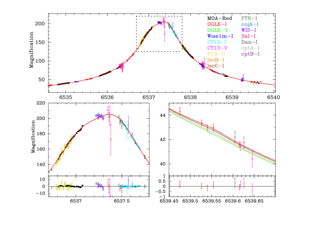
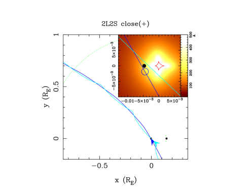
| Parameters | Units | Close | Wide | ||
|---|---|---|---|---|---|
| () | () | () | () | ||
| HJD-2456530 | |||||
| day | |||||
| radian | |||||
| degree | |||||
| degree | |||||
| day | |||||
| HJD-2456500 | |||||
| 16542.2 | 16543.3 | 16542.3 | 16542.9 | ||
| - | 1.1 | 0.1 | 0.7 | ||
Note. — هنا نفترض و. نسب الفيض وسعة اختلاف المنظر ليست معلمات ملاءمة. وتُستخدم جميع المعلمات الأخرى في هذا الجدول كمعلمات ملاءمة للنمذجة.
أخيرا، استكشفنا نماذج 2L2S مع الحركة المدارية للمصدر، أي مع أخذ فيض رفيق المصدر وتأثير xallarap في الحسبان. هنا اعتمدنا نسب الفيض المقدرة من ، المشتقة من معلمات xallarap، حفاظا على الاتساق. واشتققنا نسب الفيض في كل نطاق من توليفة من ونموذج نظري لمنحنى تساوي العمر النجمي55 5 http://stev.oapd.inaf.it/cgi-bin/cmd (PARSEC; Bressan et al., 2012) لمعدنية شمسية وعمر نموذجي لنجوم الانتفاخ مقداره 10 Gyr. وبالنسبة إلى نطاق MOA-Red، اشتققنا نسبة الفيض من نظيرتيها في النطاقين و، . تأتي هذه الصيغة من تحويل اللون الآتي، المشتق باستخدام نجوم ساطعة حول الحدث (Gould et al., 2010; Bennett et al., 2012, 2018)،
| (6) |
حيث إن و و هي المقادير الضوئية في MOA-Red ونطاقي OGLE-III و، على الترتيب. وبالنسبة إلى نطاق المرور غير المرشح، استخدمنا نسبة فيض النطاق بافتراض .
وجدنا أفضل أربعة نماذج 2L2S، وهي تعاني من انحلال التقارب/الاتساع وانحلال دائرة البروج. وتعرض معلمات هذه النماذج في الجدول 3. ويعرض منحنى الضوء لأفضل نموذج 2L2S ، ملاءمة في الشكل 5. هنا، كما يبين في المعادلة (5)، تختلف منحنيات الضوء في كل نطاق مرور. تشير المنحنيات المتصلة السوداء والحمراء والخضراء والسماوية إلى منحنيات الضوء النموذجية في نطاقات MOA-Red و و و، على الترتيب. وتظهر هندسة الكاوية ومسارات المصدر لأفضل نموذج 2L2S ، ملاءمة في الشكل 6. هنا يشير مسار رفيق المصدر إلى أن رفيق المصدر مكبر بدرجة أقوى من المصدر الأولي. وبصورة عامة، تتيح لنا مثل هذه الفروق في التكبير بين مصدرين حل انحلال التقارب/الاتساع وانحلال دائرة البروج. لكن، كما يظهر في اللوحة اليمنى السفلية من الشكل 5، حيث يبلغ تكبير المصدر الثانوي ذروته عند HJD’، فإن مساهمة الفيض أصغر من المصدر الأولي بمقدار مرة لأن رفيق المصدر أخفت ذاتيا بكثير من المصدر الأولي. ونتيجة لذلك، لم نتمكن من حل هذه الانحلالات. وتُفضَّل نماذج 2L2S هذه مقارنة بنماذج 2L1S ذات تأثيري اختلاف المنظر وxallarap بمقدار من دون معلمات ملاءمة إضافية. وتكاد معلمات الملاءمة والمعلمات الفيزيائية لنموذجي 2L1S و2L2S تكون متطابقة. لذلك فإن اختيار أي منهما لا يكاد يؤثر في النتائج النهائية. وفيما يلي، نعتمد نماذج 2L2S للنتيجة النهائية.
4 خصائص المصدر
يتيح لنا قياس تحديد نصف قطر آينشتاين الزاوي ، حيث إن هو نصف قطر المصدر الزاوي. ويمكن تقدير نصف قطر المصدر الزاوي من اللون والمقدار الضوئي الخاليين من الانطفاء لنجم المصدر باستخدام طريقة مشابهة لطريقة Yoo et al. (2004)، التي تعتمد مركز عمالقة التكتل الأحمر في الانتفاخ (RCG) كنقطة مرجعية. افترض Yoo et al. (2004) أن نجم المصدر يعاني الانطفاء نفسه الذي يعانيه RCG في الانتفاخ، بحيث يمكن وصف اللون والمقدار الضوئي الخاليين من الانطفاء لنجم المصدر بالمعادلة الآتية،
| (7) |
حيث إن هو اللون والمقدار الضوئي الخاليان من الانطفاء لمركز RCG في الانتفاخ (Bensby et al., 2011, 2013; Nataf et al., 2013)، و هي إزاحات اللون والمقدار الضوئي من مركز RCG إلى نجم المصدر، المقاسة في مخطط اللون-المقدار القياسي (CMD).
4.1 الخصائص الضوئية للمصدر
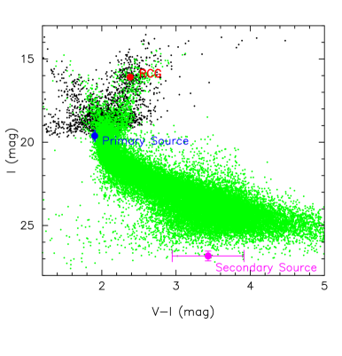
حصلنا على لون ومقدار المصدر الظاهريين المشتقين من قياسات CT13- و في نمذجة منحنى الضوء، كما يرد تفصيله في الملحق A. واشتققنا أيضا لون المصدر ومقداره الضوئي من قياسات OGLE- و، وتحققنا من اتساقهما ضمن ، كما يرد تفصيله أيضا في الملحق A. إضافة إلى ذلك، قسنا لون المصدر على نحو مستقل باستخدام انحدار خطي من CT13- و، ، وهو متسق مع . لذلك حكمنا بأن قياسات لون المصدر ومقداره الضوئي متينة. هنا اعتمدنا لون المصدر ومقداره الضوئي المشتقين من قياسات CT-13، لأن كلا من CT13- و- غطى منحنى الضوء جيدا عندما كان المصدر الأولي مكبرا بدرجة كبيرة.
يبين الشكل 7 CMD لفهرس OGLE-III ضمن من المصادر مرسوما كنقاط سوداء، وCMD لنافذة Baade من Holtzman et al. (1998) مرسوما كنقاط خضراء. وجدنا أن اللون والمقدار الضوئي الخاليين من الانطفاء للنجم المصدر الأولي هما ، بافتراض أن المصدر يعاني الانطفاء نفسه لمركز RCG البالغ . ويمثل النجمان المصدريان الأولي والثانوي بنقطتين زرقاء وأرجوانية في الشكل 7. يبدو النجم المصدر الأولي أزرق وأسطع نوعا ما من أقزام الانتفاخ النموذجية الأخرى، مما يدل على أن المصدر ربما عانى احمرارا وانطفاء أقل من مركز RCG في الانتفاخ.
4.2 الخصائص الطيفية للمصدر
التقط Bensby et al. (2017) طيفا لـ OGLE-2013-BLG-0911S وقدم خصائص المصدر بالتفصيل، وهي ملخصة في الجدول 466 6 http://cdsarc.u-strasbg.fr/viz-bin/qcat?J/A+A/605/A89. واقترحوا احتمال أن ينتمي النجم المصدر إلى قرص المجرة الأمامي لثلاثة أسباب. أولا، قاسوا الحركة الذاتية النسبية بين العدسة والمصدر بقيمة mas/yr استنادا إلى نموذجهم أحادي العدسة للعدسات الميكروية، وأشاروا إلى أن هذه القيمة الصغيرة تفضل مصدر القرص الأمامي. ثانيا، اللون الذاتي للمصدر المستند إلى قياسهم الطيفي أشد حمرة من المستنتج من تحليلهم للعدسات الميكروية، مما يدل على أن المصدر يعاني انطفاء أقل من متوسط RCG في هذا الحقل. واقترحوا أن ذلك قد يعود إلى أن المصدر يقع في القرص الأمامي. نلاحظ أن الذي اشتققناه، بافتراض أن المصدر يقع خلف كل الغبار، أقل زرقة (0.58 مقابل 0.49)، لكنه ما زال أزرق بدرجة كبيرة مقارنة بقيمة Bensby الطيفية. ثالثا، ادعوا أن السرعة الشعاعية المركزية الشمسية للمصدر، ، متسقة مع نجم قرصي.
لكن إذا اعتمدنا المشتق من نمذجة منحنى الضوء لدينا، والمقدار المطلق للمصدر المقدر من القيم الطيفية في Bensby et al. (2017)، فإن هذه القياسات تعطي مسافة للمصدر قدرها kpc، ما سيضع المصدر داخل الانتفاخ أو خلفه. وفضلا عن ذلك، نرى أن المسوغات السابقة لسيناريو مصدر القرص ليست قوية لثلاثة أسباب. أولا، قدم كل من نموذجينا 2L2S و2L1S قيمة ، وهي لا تفضل بقوة مصدر القرص الأمامي. ومن المرجح أن نموذجهم 1L1S، الذي لم يكن قادرا على ملاءمة منحنى الضوء بصورة صحيحة، اشتق قيما غير صحيحة لـ و. ثانيا، يقع اللون المشتق في تحليلنا بين قيمتي اللون الطيفية والعدسية الميكروية لديهم، ووجدنا لونا مشابها لقيمتهم العدسية الميكروية عندما نستخدم RCGs في منطقة أوسع قليلا حول الهدف، حيث يتسع توزع RCG على طول متجه الانطفاء في CMD. وهذا يدل على أن لونهم الطيفي صحيح، وأن اللونين الضوئيين لديهم ولدينا، و على الترتيب، والمستندين إلى متوسط لون RCG في منطقة أوسع، منحازان بسبب انخفاض الدقة المكانية مقارنة بالتغير المكاني الفعلي للاحمرار. لذلك نخلص إلى أن فرق اللون قد يعود إلى التغير المكاني المحلي للانطفاء في هذا الحقل، لا إلى سيناريو القرص الأمامي. ثالثا، ليس القيد من قويا لأنه يمكن تفسيره أيضا بصورة كافية بتوزع سرعات الانتفاخ ذي التشتت الكبير البالغ (Howard et al., 2008).
أخيرا، نعتمد 90% من انطفاء RCG كانطفاء للمصدر، أي ، ومن ثم فإن اللون والمقدار الضوئي الذاتيين للمصدر الأولي هما . وهذا متسق مع لون المصدر الطيفي . نلاحظ أنه حتى لو افترضنا أن المصدر يعاني الانطفاء نفسه لمتوسط RCG، فإن نصف قطر المصدر الزاوي المقدر متسق مع ذلك المقدر عند 90% من متوسط انطفاء RCG. وتُلخص خصائص المصدر في الجدول 4.
| (mag) | (mag) | (as) | |
|---|---|---|---|
| apparent | - | ||
| intrinsic | |||
| From Bensby et al. (2017) | |||
| Effective Temperature | $a$$a$footnotemark: | (K) | |
| $b$$b$footnotemark: | (K) | ||
| Source Color | $a$$a$footnotemark: | (mag) | |
| $b$$b$footnotemark: | 0.49 (mag) | ||
| Absolute Magnitude | $a$$a$footnotemark: | 3.69 (mag) | |
| Heliocentric Radial Velocity | (km/s) | ||
Note. — نمذج Bensby et al. (2017) الحدث OGLE-2013-BLG-0911 كحدث 1L1S.
4.3 المصدر الزاوي ونصف قطر آينشتاين
باستخدام لون ومقدار المصدر الخاليين من الانطفاء، يمكننا تقدير من علاقة تجريبية دقيقة بين و
| (8) |
وهي العلاقة المثلى لمجالات الألوان في رصد العدسات الميكروية، والمشتقة من التحليل الموسع لـ Boyajian et al. (2014). وباستخدام المعادلة (8)، قدرنا as لأفضل نموذج ملاءمة. استخدمنا المعادلة (8) وأخذنا انطفاء المصدر ولايقينه في الحسبان ضمن حسابات MCMC لدينا لاشتقاق نصف قطر آينشتاين الزاوي والحركة الذاتية النسبية الجيومركزية بين العدسة والمصدر لكل نموذج. وتُلخص النتائج في الجدول 5.
5 خصائص نظام العدسة
النموذج القريب
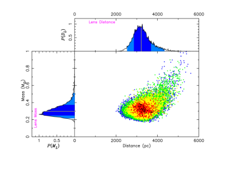
النموذج الواسع
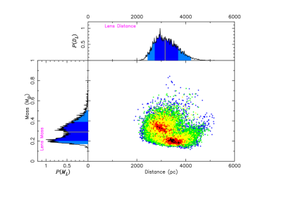
| Parameters | Units | Close | Wide |
|---|---|---|---|
| Lens Host Mass, | |||
| Lens Companion Mass, | |||
| Lens Distance, | kpc | ||
| Expected Semi-major Axis, | au | ||
| Source Companion Mass, | |||
| Distance between Sources, | au | ||
| Angular Einstein Radius, | mas | ||
| Geocentric Lens-Source Proper Motion, | mas/yr | ||
| Predicted Lens Magnitude, | mag | ||
| Predicted Lens Magnitude, | mag | ||
| Predicted Lens Magnitude, | mag | ||
| Predicted Lens Magnitude, | mag | ||
Note. — القيمة الوسطية ومجال الثقة 68.3% المشتقان من MCMC. هنا نفترض و باستثناء مقادير العدسة.
تتيح لنا قياسات كل من و تحديد كتلة العدسة ومسافتها مباشرة (Gould, 2000; Bennett, 2008) كما يلي
| (9) |
حيث إن هي مسافات العدسة. اشتققنا توزيعات الاحتمال للمعلمات الفيزيائية لنظامي المصدر والعدسة بحساب قيمها في كل وصلة من وصلات MCMC. هنا افترضنا كتلة المصدر الأولي ومسافة المصدر kpc. وكما أُشير في الملحق B، تحققنا من أن هذه الافتراضات لا تكاد تؤثر في توزيعات MCMC اللاحقة للمعلمات الفيزيائية للعدسة، باستثناء مسافة العدسة . جمعنا توزيعات الاحتمال اللاحقة لكل نموذج مع الترجيح بـ . يبين الشكل 8 توزيعات الاحتمال لكتلة العدسة ومسافتها للنموذجين القريب والواسع، وتُلخص النتيجة النهائية للمعلمات الفيزيائية في الجدول 5. وتشير النتيجة إلى أن نظام العدسة قزم من النوع M يدور حوله رفيق مشتري ضخم عند فصل قريب جدا (، ، ) أو واسع (، ، ).
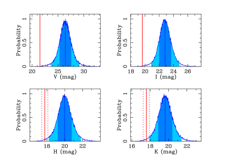
قيّمنا المقدار الظاهري المتوقع لسطوع العدسة بإجراء تحليل بايزي يستند إلى و و المرصودة، وإلى احتمالات قبلية من نموذج مجري قياسي (Sumi et al., 2011). هنا قيّمنا الانطفاء أمام العدسة المعطى بـ
| (10) |
حيث يقابل الفهرس نطاق المرور و و و، و هو طول مقياس الغبار باتجاه الحدث (Bennett et al., 2015). وتُقدر قيم سطوع العدسة والانطفاء من علاقات اللون-اللون والكتلة-اللمعان لنجوم النسق الرئيسي (Henry & McCarthy, 1993; Kenyon & Hartmann, 1995; Kroupa, & Tout, 1997) ومن قانون الانطفاء في Nishiyama et al. (2009)، على الترتيب. وقدرنا أيضا مقادير المصدر الضوئية في النطاقين و من Kenyon & Hartmann (1995) مع أخذ لايقين قدره 10% في الحسبان. يمثل الشكل 9 المقادير الظاهرية للعدسة في كل نطاق، المشتقة من التحليل البايزي. وتشير المنطقتان الزرقاوان الداكنة والفاتحة إلى مجالي الثقة 68.3 % و95.4%، وتشير الخطوط الزرقاء الرأسية إلى القيم الوسطية. والخطوط الحمراء الرأسية المتصلة والمتقطعة هي مقادير المصدر الضوئية ولايقيناتها في كل نطاق مرور. العلاقة بين الحركة الذاتية النسبية المركزية الشمسية والجيومركزية هي
| (11) |
حيث إن و هما اختلاف المنظر النسبي بين العدسة والمصدر والسرعة اللحظية للأرض على مستوى السماء عند الزمن المرجعي، على الترتيب. الحركة الذاتية النسبية المركزية الشمسية هي ، ومن ثم سيكون الفصل الزاوي بين المصدر والعدسة في 2019. أظهر Bhattacharya et al. (2017) جدوى أرصاد المتابعة بواسطة Hubble Space Telescope لقياس الفصل بين المصدر والعدسة بدقة mas عندما لا تكون العدسة أخفت بكثير من المصدر (وترد الحالة الراهنة للتقنيات الفنية لتحليل الدقة الزاوية العالية بالتفصيل في Bhattacharya et al. (2018)). ومن ثم قد تفيد أرصاد متابعة عالية الدقة في تقييد المعلمات الفيزيائية لنظام العدسة. ومع ذلك، نلاحظ أن الحلول الأربعة المنحلة تمتلك متجهات اختلاف منظر ذات سعات واتجاهات ولايقينات متشابهة تقريبا، ومن ثم فمن غير المرجح حل هذه الحلول المنحلة بواسطة أرصاد متابعة عالية الدقة.
6 ملخص ومناقشة
قدمنا تحليل حدث العدسة الميكروية OGLE-2013-BLG-0911. أفاد البحث السابق عن الحدث (Shvartzvald et al., 2016) بأن شذوذ العدسة يمكن تفسيره بنسبة كتلة كوكبية، . غير أننا وجدنا، من تحليل بحث شبكي مفصل، أن نسبة كتلة ثنائية مفضلة على نسبة كتلة كوكبية لتفسير منحنى الضوء. وفي النهاية نخلص إلى أن نظام العدسة قزم من النوع M يدور حوله رفيق مشتري ضخم عند فصل قريب جدا (، ، ) أو واسع (، ، ).
توفر منحنيات ضوء العدسات الميكروية عموما تقديرا أدق بكثير لنسبة الكتلة مقارنة بتقدير كتلة العدسة المطلقة. عرّف Bond et al. (2004) حد نسبة الكتلة بين BDs والكواكب بأنه من أجل التمييز بين أحداث العدسات الميكروية الكوكبية والثنائيات النجمية (بما في ذلك BD). وبالنسبة إلى هذا الحدث، تقع نسبة الكتلة الأفضل ملاءمة أعلى قليلا من حد نسبة الكتلة البالغ . ومن ناحية أخرى، فإن وسيط كتلة الرفيق أدنى قليلا من الحد الأدنى لكتلة BD البالغ . لذلك فإن تصنيف الرفيق كـ BD أو كوكب يظل ملتبسا. وفي الواقع، هذه الحدود اعتباطية إلى حد ما، وقد لا يكون من المجدي تصنيف مثل هذا الرفيق الملتبس وفقا لها. ومع ذلك، فمن المرجح أن آليات تشكل BDs والكواكب مختلفة، وأن الجسم القريب من الحدود قد يكون قد تشكل بأي من آليتي التشكل. لذلك من المهم جدا استقصاء توزع الرفقاء متوسطي الكتلة ذوي .
إن فقدان أفضل تفسير نموذجي للعدسة لبيانات منحنى الضوء المرصودة للعدسات الميكروية قد تكون له آثار جسيمة في أي تحليل إحصائي للعدسات الميكروية يدمج نتائج النمذجة تلك. فعلى سبيل المثال، يقترح Shvartzvald et al. (2016) وجود نقص محتمل في BDs يقابل في دالة نسبة الكتلة المصححة بكفاءة الكشف لديهم. ومع ذلك، وجدنا أن OGLE-2013-BLG-0911، الذي اعتُمد كعينة كوكبية في تحليلهم، سيقابل موضع نقص BD، مما سيؤثر في نتيجتهم إلى حد ما. ويبدو أن سبب فقدانهم أفضل حل هو الفصل الإسقاطي الصغير/الواسع جدا أو . لقد استكشفوا فضاء المعلمات ذي في تحليلهم الشبكي. ومن المعروف أن حجم الكاوية المركزية يتناسب تقريبا ليس فقط مع ، بل أيضا مع و (Chung et al., 2005). لذلك، عندما ننمذج منحنيات ضوء العدسات الميكروية ذات اضطرابات قد تكون ناجمة عن كاويات مركزية صغيرة الحجم، ينبغي أن نشتبه في إمكانات وجود رفقاء عدسة منخفضي الكتلة جدا، وكذلك قريبين جدا أو واسعين جدا. إن كفاءة الكشف عن الرفقاء ذوي مثل هذه الفواصل القريبة جدا والواسعة جدا أدنى بكثير من تلك ذات (Suzuki et al., 2016). ومن ثم فقد يكون حتى عدد صغير من الاكتشافات مهما في التحليل الإحصائي.
يعتمد الاكتشاف الناجح لنموذج أفضل ملاءمة على المعلمات الابتدائية لملاءمة MCMC. حاليا، تستند المعلمات الابتدائية لنمذجة أحداث العدسات الثنائية أساسا إلى خبرات واضعي النماذج أو إلى القوة الغاشمة باستخدام تحليل البحث الشبكي عبر مجال واسع من فضاءات المعلمات. ويعتمد التحليل المنهجي لكثير من الأحداث على الطريقة الأخيرة. إلا أنها لن تعمل إذا كانت حلول أفضل ملاءمة خارج مجال البحث الشبكي، وهو ما حدث في هذا الحدث OGLE-2013-BLG-0911. إن توسيع مجال البحث قدر الإمكان طريقة مباشرة لتجنب المشكلة. ومع ذلك، فهو مكلف حسابيا ويزداد صعوبة في التحليلات الإحصائية التي تشمل مئات أحداث الثنائيات النجمية في المسوح الحديثة عالية الوتيرة بواسطة MOA وOGLE وKMTNet (Kim et al., 2016). وعلاوة على ذلك، سيُطلق Wide Field Infrared Survey Telescope (WFIRST; Spergel et al., 2015) في 2025، ومن المتوقع أن يكتشف حدث عدسة ميكروية ، مع آلاف أحداث العدسات الثنائية بما في ذلك كوكبا خارجيا مرتبطا بكتل مقدارها (Penny et al., 2019). ينبغي أن ننظر في طريقة جديدة للبحث بكفاءة عن أفضل حلول العدسات الثنائية. طبق Bennett et al. (2012) بارامترية مختلفة لأحداث الثنائيات واسعة الفصل. واقترح Khakpash et al. (2019) خوارزمية تستطيع تقييم عدد كبير من منحنيات ضوء العدسات الثنائية بسرعة وتقدير المعلمات الفيزيائية لأنظمة العدسة، وقد نجحت في الأحداث ذات نسب الكتلة المنخفضة جدا، لكنها أقل نجاحا في الأحداث ذات نسب الكتلة الأعلى.
لا توجد سوى أربعة اكتشافات لرفقاء BD حول أقزام M ضمن 10 pc من النظام الشمسي (Winters et al., 2018)، في حين يُعرف وجود نحو 200 من أقزام M ضمن 10 pc (Henry et al., 2006, 2016)، وقد بُذلت جهود كبيرة لاكتشاف مثل هؤلاء الرفقاء BD (Henry & McCarthy, 1990; Dieterich et al., 2012). وبسبب ندرتها، توفر الاكتشافات الجديدة القادمة لـ BD حول أقزام M قيودا قيّمة على نظريات تشكل النجوم وBDs والكواكب وتطورها. والعدسات الميكروية طريقة قوية لاستقصاء تواتر حدوث BD/الكواكب الضخمة عبر أنصاف أقطار مدارية au حول مضيفين منخفضي الكتلة مثل أقزام M وحتى BDs (Gaudi, 2002)، وهو أمر صعب لطرائق كشف الكواكب الخارجية الأخرى. وعلى الرغم من أن عينات العدسات الميكروية لا تستطيع عموما توفير بعض المعلومات مثل معدنية المضيف ولا مركزيته، فإن العدسات الميكروية تستطيع توفير كتلها وفواصلها المدارية معا. ومن المهم جدا كشف توزيعات خصائص BD بواسطة العدسات الميكروية.
Appendix A معايرة مقدار المصدر الضوئي
اشتققنا المقدار الظاهري ولون المصدر من قياسات CT13- و التي أُجريت خلال زمن التكبير العالي. اتبعنا أساسا الإجراء الموصوف في Bond et al. (2017) من أجل تحويل المقادير الآلية CT13 إلى المقادير القياسية. وقاطعنا النجوم المعزولة حول من المصدر بين فهرس CT13 المختزل بواسطة DoPHOT (Schechter et al., 1993) وفهرس OGLE-III (Szymański et al., 2011). وجدنا العلاقة الآتية على صورة
ونتيجة لذلك، حصلنا على اللون والمقدار الظاهريين للمصدر، . وفضلا عن ذلك، اشتققنا أيضا لون المصدر ومقداره الضوئي من قياسات OGLE- و للتحقق. استخدمنا المعادلة (1) في Udalski et al. (2015) لمعايرة المقادير الآلية OGLE-IV وتحويلها إلى المقادير القياسية. طبقنا و و و على المعادلة (1) في Udalski et al. (2015)، وهي قيم حُصل عليها بتواصل خاص مع تعاون OGLE. وأخيرا، اشتققنا لون المصدر ومقداره الظاهريين من OGLE- و، .
Appendix B أثر افتراض و
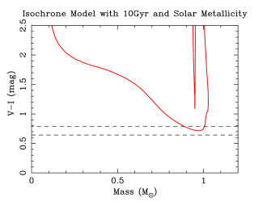
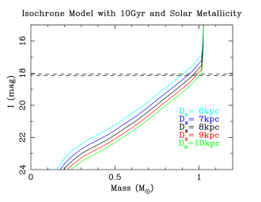
اختبرنا كيفية تأثير افتراض القيمتين الثابتتين و في النتائج النهائية. يمثل الشكل 10 منحنى تساوي العمر النجمي PARSEC بمعدنية شمسية وعمر قدره 10 Gyr. وبمقارنة منحنى تساوي العمر بلون المصدر الذاتي المرصود ومقداره الضوئي ، يمكننا القول إن كتلة المصدر ومسافته من المرجح أن تقعان ضمن المجالين و، على الترتيب. وفي هذه المجالات المرجحة، أجرينا نمذجة منحنى الضوء لـ 1L2S و2L1S و2L2S مع جميع التراكيب 15 للقيمتين الثابتتين و kpc. وجدنا أن القيم الثابتة لها تأثيرات قليلة في قيمة الأفضل ملاءمة، وأن توزيعات MCMC اللاحقة للمعلمات الفيزيائية للعدسة متسقة بعضها مع بعض ضمن باستثناء مسافة العدسة . لذلك نخلص إلى أن افتراضات و لا تؤثر بدرجة مهمة في النتائج النهائية، باستثناء .
References
- Alard (2000) Alard, C. 2000, A&AS, 144, 363
- Alard & Lupton (1998) Alard, C., & Lupton, R. H. 1998, ApJ, 503, 325
- Albrow et al. (2009) Albrow, M. D., Horne, K., Bramich, D. M., et al. 2009, MNRAS, 397, 2099
- André et al. (2012) André, P., Ward-Thompson, D., & Greaves, J. 2012, Science, 337, 69
- Armitage & Bonnell (2002) Armitage, P. J., & Bonnell, I. A. 2002, MNRAS, 330, L11
- Batista et al. (2009) Batista, V., Dong, S., Gould, A., et al. 2009, A&A, 508, 467
- Bennett (2010) Bennett, D. P. 2010, ApJ, 716, 1408
- Bennett & Rhie (1996) Bennett, D. P., & Rhie, S. H. 1996, ApJ, 472, 660
- Bennett (2008) Bennett, D. P. 2008, Exoplanets, 47
- Bennett et al. (2008) Bennett, D. P., Bond, I. A., Udalski, A., et al. 2008, ApJ, 684, 663
- Bennett et al. (2012) Bennett, D. P., Sumi, T., Bond, I. A., et al. 2012, The Astrophysical Journal, 757, 119
- Bennett et al. (2014) Bennett, D. P., Batista, V., Bond, I. A., et al. 2014, ApJ, 785, 155
- Bennett et al. (2015) Bennett, D. P., Bhattacharya, A., Anderson, J., et al. 2015, The Astrophysical Journal, 808, 169
- Bennett et al. (2018) Bennett, D. P., Udalski, A., Han, C., et al. 2018, AJ, 155, 141
- Bensby et al. (2011) Bensby, T., Adén, D., Meléndez, J., et al. 2011, A&A, 533, A134
- Bensby et al. (2013) Bensby, T., Yee, J. C., Feltzing, S., et al. 2013, A&A, 549, A147
- Bensby et al. (2017) Bensby, T., Feltzing, S., Gould, A., et al. 2017, A&A, 605, A89
- Bhattacharya et al. (2017) Bhattacharya, A., Bennett, D. P., Anderson, J., et al. 2017, The Astronomical Journal, 154, 59
- Bhattacharya et al. (2018) Bhattacharya, A., Beaulieu, J.-P., Bennett, D. P., et al. 2018, The Astronomical Journal, 156, 289
- Bond et al. (2001) Bond, I. A., Abe, F., Dodd, R. J., et al. 2001, MNRAS, 327, 868
- Bond et al. (2004) Bond, I. A., Udalski, A., Jaroszyński, M., et al. 2004, ApJ, 606, L155
- Bond et al. (2017) Bond, I. A., Bennett, D. P., Sumi, T., et al. 2017, MNRAS, 469, 2434
- Boss (1997) Boss, A. P. 1997, Science, 276, 1836
- Boss (2001) Boss, A. P. 2001, ApJ, 551, L167
- Borucki et al. (2010) Borucki, W. J., Koch, D., Basri, G., et al. 2010, Science, 327, 977
- Boyajian et al. (2014) Boyajian, T. S., van Belle, G., & von Braun, K. 2014, AJ, 147, 47
- Bramich (2008) Bramich, D. M. 2008, MNRAS, 386, L77
- Bramich et al. (2013) Bramich, D. M., Horne, K., Albrow, M. D., et al. 2013, MNRAS, 428, 2275
- Bressan et al. (2012) Bressan, A., Marigo, P., Girardi, L., et al. 2012, MNRAS, 427, 127
- Burrows et al. (1993) Burrows, A., Hubbard, W. B., Saumon, D., & Lunine, J. I. 1993, ApJ, 406, 158
- Cardelli et al. (1989) Cardelli, J. A., Clayton, G. C., & Mathis, J. S. 1989, The Astrophysical Journal, 345, 245
- Carnero Rosell et al. (2019) Carnero Rosell, A., Santiago, B., dal Ponte, M., et al. 2019, MNRAS, 489, 5301
- Choi et al. (2012) Choi, J.-Y., Shin, I.-G., Han, C., et al. 2012, ApJ, 756, 48
- Chung et al. (2005) Chung, S.-J., Han, C., Park, B.-G., et al. 2005, ApJ, 630, 535
- Claret & Bloemen (2011) Claret, A., & Bloemen, S. 2011, A&A, 529, A75
- Dieterich et al. (2012) Dieterich, S. B., Henry, T. J., Golimowski, D. A., Krist, J. E., & Tanner, A. M. 2012, AJ, 144, 64
- Dominik (1999) Dominik, M. 1999, A&A, 349, 108
- Dominik et al. (2010) Dominik, M., Jørgensen, U. G., Rattenbury, N. J., et al. 2010, Astronomische Nachrichten, 331, 671
- Dominik et al. (2019) Dominik, M., Bachelet, E., Bozza, V., et al. 2019, MNRAS, 484, 5608
- Duchêne & Kraus (2013) Duchêne, G., & Kraus, A. 2013, ARA&A, 51, 269
- Gaudi et al. (2009) Gaudi, B. S., Beaulieu, J. P., Bennett, D. P., et al. 2009, astro2010: The Astronomy and Astrophysics Decadal Survey, 2010,
- Grether & Lineweaver (2006) Grether, D., & Lineweaver, C. H. 2006, ApJ, 640, 1051
- Griest & Hu (1992) Griest, K., & Hu, W. 1992, ApJ, 397, 362
- Griest & Safizadeh (1998) Griest, K., & Safizadeh, N. 1998, ApJ, 500, 37
- González & Bonifacio (2009) González Hernández, J. I., & Bonifacio, P. 2009, A&A, 497, 497
- Gaudi (1998) Gaudi, B. S. 1998, ApJ, 506, 533
- Gaudi (2002) Gaudi, B. S. 2002, arXiv:astro-ph/0206494
- Gould (1992) Gould, A. 1992, ApJ, 392, 442
- Gould (2000) Gould, A. 2000, ApJ, 542, 785
- Gould (2004) Gould, A. 2004, ApJ, 606, 319
- Gould et al. (2010) Gould, A., Dong, S., Bennett, D. P., et al. 2010, The Astrophysical Journal, 710, 1800
- Gould & Welch (1996) Gould, A., & Welch, D. L. 1996, ApJ, 464, 212
- Gould et al. (2006) Gould, A., Udalski, A., An, D., et al. 2006, ApJ, 644, L37
- Gorbikov et al. (2010) Gorbikov, E., Brosch, N., & Afonso, C. 2010, Ap&SS, 326, 203
- Han & Gould (1997) Han, C., & Gould, A. 1997, ApJ, 480, 196
- Han et al. (2017) Han, C., Udalski, A., Sumi, T., et al. 2017, ApJ, 843, 59
- Hayashi (1981) Hayashi, C. 1981, Fundamental Problems in the Theory of Stellar Evolution, 93, 113
- Henderson et al. (2014) Henderson, C. B., Gaudi, B. S., Han, C., et al. 2014, ApJ, 794, 52
- Henry & McCarthy (1990) Henry, T. J., & McCarthy, D. W., Jr. 1990, ApJ, 350, 334
- Henry & McCarthy (1993) Henry, T. J., & McCarthy, D. W., Jr. 1993, AJ, 106, 773
- Henry et al. (1999) Henry, T. J., Franz, O. G., Wasserman, L. H., et al. 1999, ApJ, 512, 864
- Henry et al. (2006) Henry, T. J., Jao, W.-C., Subasavage, J. P., et al. 2006, AJ, 132, 2360
- Henry et al. (2016) Henry, T. J., Jao, W.-C., Winters, J. G., et al. 2016, American Astronomical Society Meeting Abstracts #227, 227, 142.01
- Holtzman et al. (1998) Holtzman, J. A., Watson, A. M., Baum, W. A., et al. 1998, AJ, 115, 1946
- Howard et al. (2008) Howard, C. D., Rich, R. M., Reitzel, D. B., et al. 2008, ApJ, 688, 1060
- Ida & Lin (2004) Ida, S., & Lin, D. N. C. 2004, ApJ, 604, 388
- Ida & Lin (2005) Ida, S., & Lin, D. N. C. 2005, ApJ, 626, 1045
- Johnson et al. (2010) Johnson, J. A., Howard, A. W., Marcy, G. W., et al. 2010, PASP, 122, 149
- Jung et al. (2017a) Jung, Y. K., Udalski, A., Yee, J. C., et al. 2017, AJ, 153, 129
- Jung et al. (2017b) Jung, Y. K., Udalski, A., Bond, I. A., et al. 2017, ApJ, 841, 75
- Kenyon & Hartmann (1995) Kenyon, S. J., & Hartmann, L. 1995, ApJS, 101, 117
- Khakpash et al. (2019) Khakpash, S., Penny, M., & Pepper, J. 2019, AJ, 158, 9
- Kroupa, & Tout (1997) Kroupa, P., & Tout, C. A. 1997, Monthly Notices of the Royal Astronomical Society, 287, 402
- Kim et al. (2016) Kim, S.-L., Lee, C.-U., Park, B.-G., et al. 2016, Journal of Korean Astronomical Society, 49, 37
- Kumar (1962) Kumar, S. S. 1962, Institute for Space Studies Report Number X-644-62-78 (1962),
- Laughlin et al. (2004) Laughlin, G., Bodenheimer, P., & Adams, F. C. 2004, ApJ, 612, L73
- Lissauer (1993) Lissauer, J. J. 1993, ARA&A, 31, 129
- Liebig et al. (2015) Liebig, C., D’Ago, G., Bozza, V., et al. 2015, MNRAS, 450, 1565
- Loeb & Sasselov (1995) Loeb, A., & Sasselov, D. 1995, ApJ, 449, L33
- Luhman (2012) Luhman, K. L. 2012, ARA&A, 50, 65
- Ma & Ge (2014) Ma, B., & Ge, J. 2014, MNRAS, 439, 2781
- Mao & Paczynski (1991) Mao, S., & Paczynski, B. 1991, ApJ, 374, L37
- Marcy & Butler (2000) Marcy, G. W., & Butler, R. P. 2000, PASP, 112, 137
- Matzner & Levin (2005) Matzner, C. D., & Levin, Y. 2005, ApJ, 628, 817
- Mayer et al. (2002) Mayer, L., Quinn, T., Wadsley, J., & Stadel, J. 2002, Science, 298, 1756
- Mayor & Queloz (1995) Mayor, M., & Queloz, D. 1995, Nature, 378, 355
- Metchev & Hillenbrand (2009) Metchev, S. A., & Hillenbrand, L. A. 2009, ApJS, 181, 62
- Miyake et al. (2012) Miyake, N., Udalski, A., Sumi, T., et al. 2012, ApJ, 752, 82
- Miyazaki et al. (2018) Miyazaki, S., Sumi, T., Bennett, D. P., et al. 2018, AJ, 156, 136
- Mordasini et al. (2009) Mordasini, C., Alibert, Y., Benz, W., & Naef, D. 2009, A&A, 501, 1161
- Neuhäuser & Guenther (2004) Neuhäuser, R., & Guenther, E. W. 2004, A&A, 420, 647
- Nakajima et al. (1995) Nakajima, T., Oppenheimer, B. R., Kulkarni, S. R., et al. 1995, Nature, 378, 463
- Nataf et al. (2013) Nataf, D. M., Gould, A., Fouqué, P., et al. 2013, ApJ, 769, 88
- Nishiyama et al. (2009) Nishiyama, S., Tamura, M., Hatano, H., et al. 2009, The Astrophysical Journal, 696, 1407
- Paczynski (1986) Paczynski, B. 1986, ApJ, 304, 1
- Paczynski (1991) Paczynski, B. 1991, ApJ, 371, L63
- Penny et al. (2019) Penny, M. T., Gaudi, B. S., Kerins, E., et al. 2019, ApJS, 241, 3
- Poindexter et al. (2005) Poindexter, S., Afonso, C., Bennett, D. P., et al. 2005, ApJ, 633, 914
- Pollack et al. (1996) Pollack, J. B., Hubickyj, O., Bodenheimer, P., et al. 1996, Icarus, 124, 62
- Ranc et al. (2015) Ranc, C., Cassan, A., Albrow, M. D., et al. 2015, A&A, 580, A125
- Rattenbury et al. (2002) Rattenbury, N. J., Bond, I. A., Skuljan, J., & Yock, P. C. M. 2002, MNRAS, 335, 159
- Ryu et al. (2018) Ryu, Y.-H., Yee, J. C., Udalski, A., et al. 2018, AJ, 155, 40
- Sako et al. (2008) Sako, T., Sekiguchi, T., Sasaki, M., et al. 2008, Experimental Astronomy, 22, 51
- Schechter et al. (1993) Schechter, P. L., Mateo, M., & Saha, A. 1993, PASP, 105, 1342
- Shin et al. (2019) Shin, I.-G., Yee, J. C., Gould, A., et al. 2019, arXiv e-prints, arXiv:1902.10945
- Shvartzvald & Maoz (2012) Shvartzvald, Y., & Maoz, D. 2012, MNRAS, 419, 3631
- Shvartzvald et al. (2015) Shvartzvald, Y., Udalski, A., Gould, A., et al. 2015, ApJ, 814, 111
- Shvartzvald et al. (2016) Shvartzvald, Y., Maoz, D., Udalski, A., et al. 2016a, MNRAS, 457, 4089
- Skowron et al. (2011) Skowron, J., Udalski, A., Gould, A., et al. 2011, ApJ, 738, 87
- Skowron et al. (2016) Skowron, J., Udalski, A., Kozłowski, S., et al. 2016, Acta Astron., 66, 1
- Smith et al. (2003) Smith, M. C., Mao, S., & Paczyński, B. 2003, MNRAS, 339, 925
- Spergel et al. (2015) Spergel, D., Gehrels, N., Baltay, C., et al. 2015, arXiv e-prints, arXiv:1503.03757
- Sumi et al. (2003) Sumi, T., Abe, F., Bond, I. A., et al. 2003, ApJ, 591, 204
- Sumi et al. (2011) Sumi, T., Kamiya, K., Bennett, D. P., et al. 2011, Nature, 473, 349
- Suzuki et al. (2016) Suzuki, D., Bennett, D. P., Sumi, T., et al. 2016, ApJ, 833, 145
- Suzuki et al. (2018) Suzuki, D., Bennett, D. P., Ida, S., et al. 2018, ApJ, 869, L34
- Szymański et al. (2011) Szymański, M. K., Udalski, A., Soszyński, I., et al. 2011, Acta Astron., 61, 83
- Tanigawa & Tanaka (2016) Tanigawa, T., & Tanaka, H. 2016, ApJ, 823, 48
- Tsapras et al. (2009) Tsapras, Y., Street, R., Horne, K., et al. 2009, Astronomische Nachrichten, 330, 4
- Udalski et al. (1994) Udalski, A., Szymanski, M., Stanek, K. Z., et al. 1994, Acta Astron., 44, 165
- Udalski et al. (2015) Udalski, A., Szymański, M. K., & Szymański, G. 2015, Acta Astron., 65, 1
- Udalski et al. (2018) Udalski, A., Ryu, Y.-H., Sajadian, S., et al. 2018, Acta Astron., 68, 1
- Vigan et al. (2012) Vigan, A., Patience, J., Marois, C., et al. 2012, A&A, 544, A9
- Verde et al. (2003) Verde, L., Peiris, H. V., Spergel, D. N., et al. 2003, ApJS, 148, 195
- Winters et al. (2018) Winters, J. G., Irwin, J., Newton, E. R., et al. 2018, AJ, 155, 125
- Wozniak (2000) Wozniak, P. R. 2000, Acta Astron., 50, 421
- Yee et al. (2012) Yee, J. C., Shvartzvald, Y., Gal-Yam, A., et al. 2012, ApJ, 755, 102
- Yoo et al. (2004) Yoo, J., DePoy, D. L., Gal-Yam, A., et al. 2004, ApJ, 603, 139